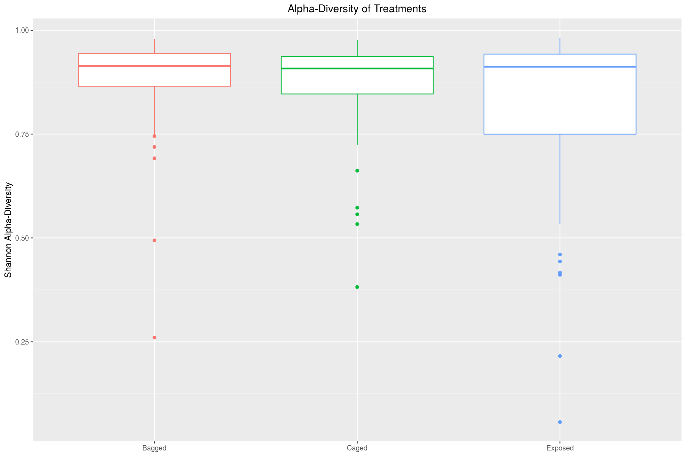
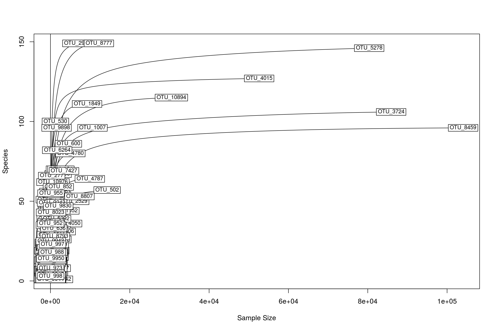
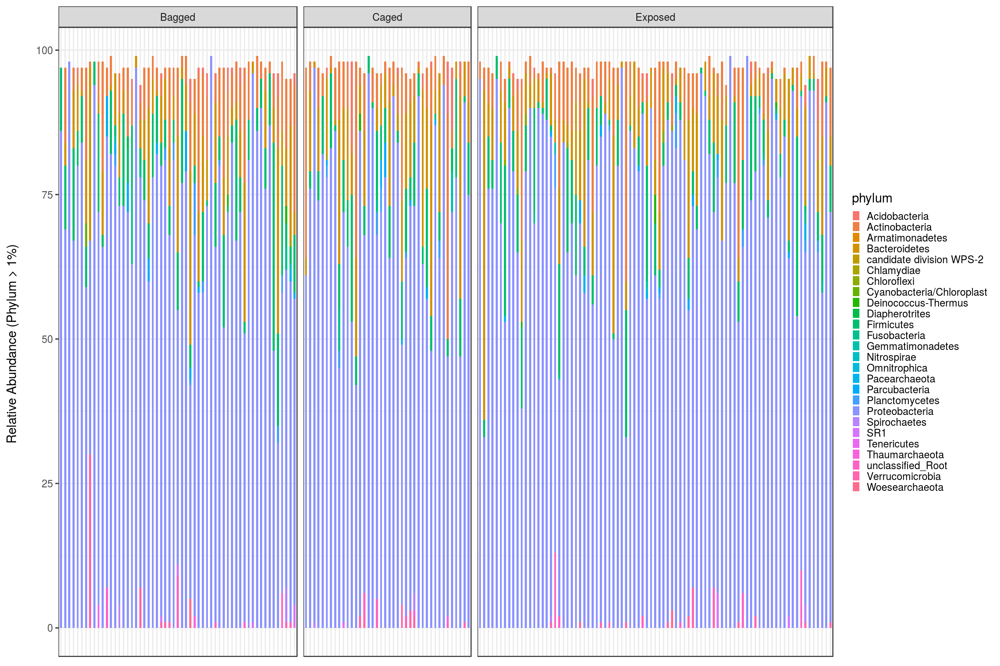
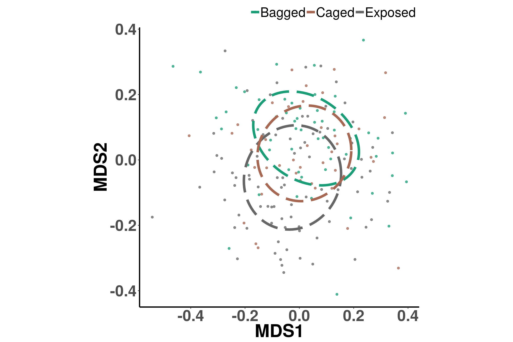
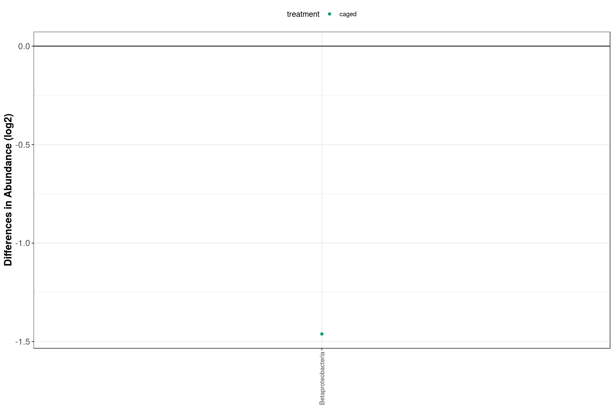
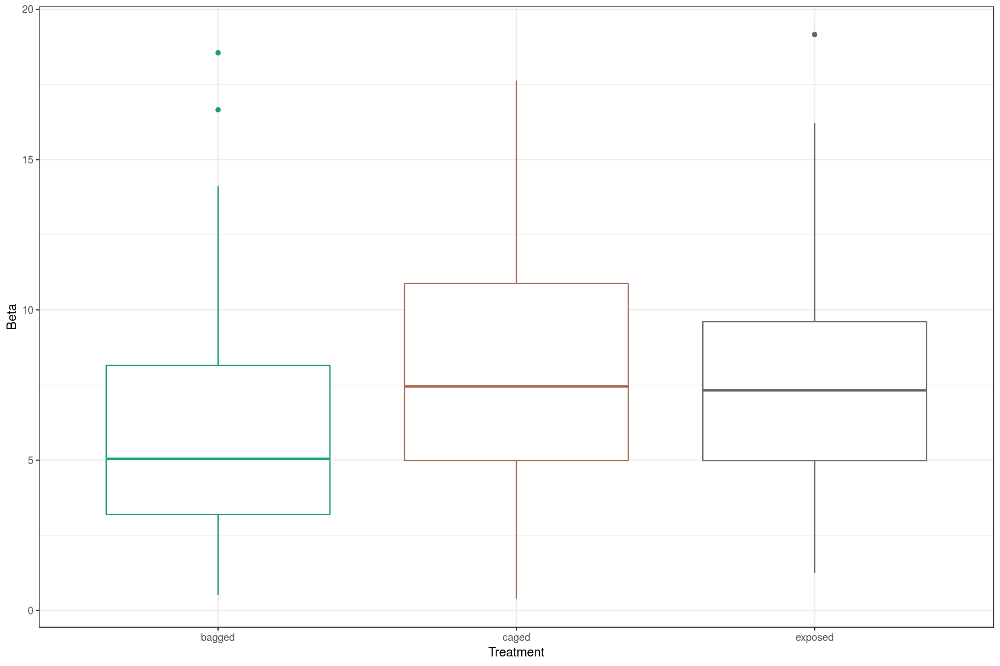
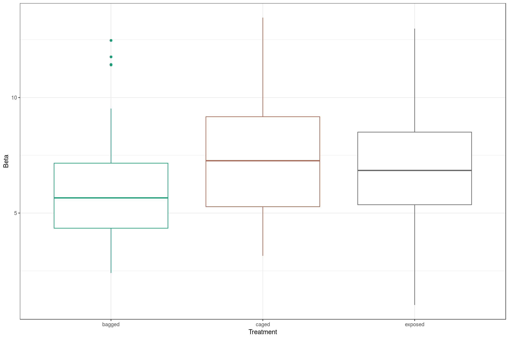
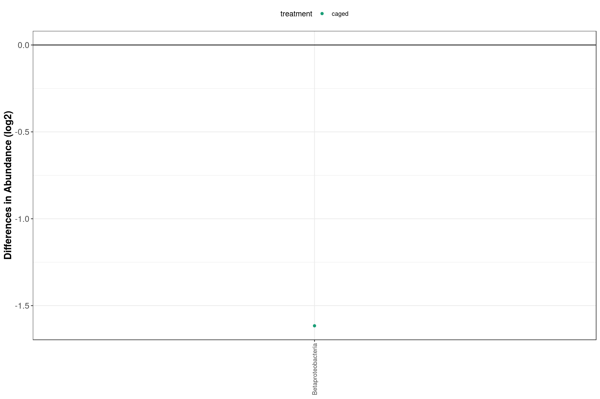

phylo.data <- readRDS("data/bacteria/germs_otus/bacteria_phyloseq.rds")
phylo.data <- prune_samples(sample_sums(phylo.data)>=200, phylo.data)
phylo.data <- filter_taxa(phylo.data, function(x) sum(x) >= 5, T)Calculated using Simpson’s index \(H = \sum_{i=1}^{R}p_{i}^{2})\), it is seen that the treatments allowing more dispersal show greater diversity (increased diverstiy being values less than \(1\)).
richness <- plot_richness(phylo.data, measures = "Simpson")$data
p <- ggplot(richness, aes(x = Treatment, y = value), color = Treatment)
p <- p + geom_boxplot(aes(color = Treatment), position = "dodge")
p <- p + ggtitle("Alpha-Diversity of Treatments")
p <- p + ylab("Shannon Alpha-Diversity")
p <- p + theme(plot.title = element_text(hjust = 0.5),
axis.title.x = element_blank(),
legend.position="none")
p
often the technique of rarefying is used to normalize sequencing data, for a variety of reason. Though this method results is throwing out a large amount of real-data to save us from a small amount of false-data. The effectiveness of rarefying is shown in rarefactions curves as seen here.
abundances <- as.matrix(data.frame(otu_table(phylo.data)))
metadata <- sample_data(phylo.data)
rarecurve(abundances, step = 20, sample = min(rowSds(abundances)), xlab = "Sample Size", ylab = "Species", label = TRUE)
# rarecurve(abundances, step = 20, sample = 5, xlab = "Sample Size", ylab = "Species", label = TRUE)Alternatively the data can be analyzed using relative abundance, which normalizes each sample but setting the values to 1 and representing each OTU as a proportion of the whole. This retains all the data and allows the samples to be fairly compared with the assumption that all the data is true.
relative_abundance <- function(physeq, n) {
physeq.scale <- transform_sample_counts(physeq, function(x){(n * x/sum(x))})
otu_table(physeq.scale) <- floor(otu_table(physeq.scale))
physeq.scale <- prune_taxa(taxa_sums(physeq.scale) > 0, physeq.scale)
return(physeq.scale)
}
relabundance <- relative_abundance(tax_glom(phylo.data, taxrank = "phylum"), 100)
relabundance_table <- psmelt(relabundance)
relabundance_table <- relabundance_table[relabundance_table$Abundance > 0.01,]
relabundance_table <- subset(relabundance_table, select=-c(domain,sample.name))
p <- ggplot(relabundance_table, aes(x = as.factor(Sample), y = Abundance, fill = phylum))
p <- p + geom_bar(stat = "identity", width = 0.5)
p <- p + facet_grid(. ~ Treatment, space = "free", scales = "free")
p <- p + theme_bw()
p <- p + theme(axis.title.x=element_blank(),
axis.text.x=element_blank(),
axis.ticks.x=element_blank())
p <- p + theme(legend.key.size = unit(0.5,"line"))
p <- p + guides(fill=guide_legend(ncol=1))
p <- p + ylab("Relative Abundance (Phylum > 1%) \n")
p
MDS plots show us the variation between samples and when looked at by treaments, shows us how much variation exists between each. The circles attempt to show a cluster for the center of the treatment, and we can see how they differentiate, though not to a great extent.
source("scripts/ggplot.NMDS.ellipse.R")
getPalette = colorRampPalette(brewer.pal(8, "Dark2")); colorCount = length(unique(metadata$Treatment)); colors = getPalette(colorCount); theme_set(theme_bw())
totu<-t(abundances)
mds <- metaMDS(totu, autotransform = F, k = 2, trymax = 100)ggplot.NMDS.ellipse(mds, metadata$Treatment, colors)
Adonis is a method commonly used for ecological systems. It runs permutations of subsets of the data and calculates distances from the cnetroid using in the same manner as ANOVA. And thusly we find that none of the treatments actually show statistically significant effects on the bacterial community.
rela.dist <- phyloseq::distance(relabundance, "bray")
si <- data.frame(sample_data(relabundance))
pairs <- t(combn(unique(si$Treatment), 2))
df <- data.frame()
for (i in 1:nrow(pairs)){
temp.rowname <- paste(pairs[i, 1], pairs[i, 2], sep="::")
temp.phy <- subset_samples(relabundance, Treatment %in% pairs[i, ])
temp.phy <- prune_taxa(taxa_sums(temp.phy) > 0, temp.phy)
temp.dist <- phyloseq::distance(temp.phy, "bray")
temp.result <- adonis(temp.dist ~ Treatment + Month + as.factor(Flower), perm=9999, as(sample_data(temp.phy), "data.frame"))
temp.df <- data.frame(temp.rowname, temp.result$aov.tab[4][1, ], temp.result$aov.tab[5][1, ], temp.result$aov.tab[6][1, ])
df <- rbind(df, temp.df)
}
names(df)<-c("factor", "rela.F.model", "rela.adonis_R2", "rela.Pr(>F)")
df## factor rela.F.model rela.adonis_R2 rela.Pr(>F)
## 1 Bagged::Exposed 0 0.011749638 1
## 2 Bagged::Caged 0 0.002311412 1
## 3 Exposed::Caged 0 0.009757328 1anova(lm(psmelt(relabundance)$Abundance ~ psmelt(relabundance)$Treatment))## Analysis of Variance Table
##
## Response: psmelt(relabundance)$Abundance
## Df Sum Sq Mean Sq F value Pr(>F)
## psmelt(relabundance)$Treatment 2 0 0.045 2e-04 0.9998
## Residuals 4729 1009139 213.394anova(lm(psmelt(relabundance)$Abundance ~ psmelt(relabundance)$Month))## Analysis of Variance Table
##
## Response: psmelt(relabundance)$Abundance
## Df Sum Sq Mean Sq F value Pr(>F)
## psmelt(relabundance)$Month 2 0 0.024 1e-04 0.9999
## Residuals 4729 1009139 213.394anova(lm(psmelt(relabundance)$Abundance ~ psmelt(relabundance)$Flower))## Analysis of Variance Table
##
## Response: psmelt(relabundance)$Abundance
## Df Sum Sq Mean Sq F value Pr(>F)
## psmelt(relabundance)$Flower 181 9 0.05 2e-04 1
## Residuals 4550 1009130 221.79TukeyHSD(aov(psmelt(relabundance)$Abundance ~ psmelt(relabundance)$Treatment))## Tukey multiple comparisons of means
## 95% family-wise confidence level
##
## Fit: aov(formula = psmelt(relabundance)$Abundance ~ psmelt(relabundance)$Treatment)
##
## $`psmelt(relabundance)$Treatment`
## diff lwr upr p adj
## Caged-Bagged 0.0107624831 -1.374595 1.396120 0.9998171
## Exposed-Bagged 0.0004683655 -1.149380 1.150317 0.9999995
## Exposed-Caged -0.0102941176 -1.298125 1.277537 0.9998064There are several different packages and methods for looking at differential abundance (taken from differential expresson used in gene studies). Here we used DESeq2 in R, and found bothing interesting when comparing each treatment to one another.
abundance <- relative_abundance(tax_glom(phylo.data, taxrank = "class"), 100)
caged <- subset_samples(abundance, Treatment!="Bagged")
caged <- prune_taxa(taxa_sums(caged) > 0, caged)
# caged <- transform_sample_counts(caged, function(x){x/sum(x)})
caged.ds <- phyloseq_to_deseq2(caged, ~ Treatment)
bagged <- subset_samples(abundance, Treatment!="Caged")
bagged <- prune_taxa(taxa_sums(bagged) > 0, bagged)
# bagged <- transform_sample_counts(bagged, function(x){x/sum(x)})
bagged.ds <- phyloseq_to_deseq2(bagged, ~ Treatment)caged.res <- data.frame(results(DESeq(caged.ds, test="Wald", fitType="parametric"), cooksCutoff=F))
bagged.res <- data.frame(results(DESeq(bagged.ds, test="Wald", fitType="parametric"), cooksCutoff=F))
caged.res.sig <- subset(caged.res, padj < 0.1)
bagged.res.sig <- subset(bagged.res, padj < 0.1)
caged.res.sig <- merge(caged.res.sig, tax_table(phylo.data), by = "row.names")
bagged.res.sig <- merge(bagged.res.sig, tax_table(phylo.data), by = "row.names")caged.res.sig$pos_neg <- ifelse(caged.res.sig$log2FoldChange > 0, "positive", "negative")
caged.res.sig$treatment <- "caged"
bagged.res.sig$pos_neg <- ifelse(bagged.res.sig$log2FoldChange > 0, "positive", "negative")
#bagged.res.sig$treatment <- "bagged"
sig.otus <- rbind(caged.res.sig, bagged.res.sig)
p <- ggplot(data=sig.otus, aes(x=class, y=log2FoldChange))
p <- p + geom_point(aes(color=treatment))
p <- p + theme_bw()
p <- p + theme(axis.text.x=element_text(angle=90, hjust = 1, vjust = 0.5),
legend.position = "top",
axis.text.y=element_text(size =12),
axis.title.x = element_text(face="bold", size =14),
axis.title.y = element_text(face="bold", size = 14)
)
p <- p + geom_hline(yintercept=0)
p <- p + scale_color_brewer(palette="Dark2")
p <- p + xlab("Class") + ylab("Differences in Abundance (log2)")
p <- p + theme(axis.title.x = element_blank())
p
Using the \(\beta\)-diversity function published in Vannette et al, We caclulated the \(\beta\)-diversity for each treatment to try to replicate their results. We saw an increase in \(\beta\)-diversity for the caged and exposed from the bagged, but not as drastic as in the original study.
source("scripts/mds.envfit.arrows.R");source("scripts/ordi.sf.R");source("scripts/Vannette.R");source("scripts/Tello.R");
caged <- subset_samples(abundance, Treatment=="Caged")
caged <- prune_taxa(taxa_sums(caged) > 0, caged)
bagged <- subset_samples(abundance, Treatment=="Bagged")
bagged <- prune_taxa(taxa_sums(bagged) > 0, bagged)
exposed <- subset_samples(abundance, Treatment=="Exposed")
exposed <- prune_taxa(taxa_sums(exposed) > 0, exposed)# bses_full <- beta.ses.list(phylo.data)
# names(bses_full) <- rownames(sample_data(phylo.data))
bses_bagged <- beta.ses.list(bagged)
names(bses_bagged) <- rownames(sample_data(bagged))
bses_caged <- beta.ses.list(caged)
names(bses_caged) <- rownames(sample_data(caged))
bses_exposed <- beta.ses.list(exposed)
names(bses_exposed) <- rownames(sample_data(exposed))
betas <- list(bses_bagged,bses_caged,bses_exposed)
names(betas) <- c("bagged","caged","exposed")
saveRDS(betas, "data/bacteria/germs_otus/beta_diversities.RDS")
betas <- readRDS("data/bacteria/germs_otus/beta_diversities.RDS")
bses_bagged <- betas$bagged
bses_caged <- betas$caged
bses_exposed <- betas$exposedgetPalette = colorRampPalette(brewer.pal(8, "Dark2"))
colorCount = length(unique(sample_data(phylo.data)$Treatment))
colors = getPalette(colorCount)
datta <- melt(c(data.frame(bagged = bses_bagged), data.frame(caged = bses_caged), data.frame(exposed = bses_exposed))); colnames(datta) <- c('Beta', 'Treatment')
ggplot(datta, aes(x = Treatment, y = Beta)) +
geom_boxplot(colour = colors)
So maybe the rarefying process had a significant affect on the data?
rare_data <- rarefy_even_depth(phylo.data, sample.size = 500, replace = FALSE)
rare_data <- relative_abundance(rare_data, 100)caged <- subset_samples(rare_data, Treatment=="Caged")
caged <- prune_taxa(taxa_sums(caged) > 0, caged)
bagged <- subset_samples(rare_data, Treatment=="Bagged")
bagged <- prune_taxa(taxa_sums(bagged) > 0, bagged)
exposed <- subset_samples(rare_data, Treatment=="Exposed")
exposed <- prune_taxa(taxa_sums(exposed) > 0, exposed)# bses_full <- beta.ses.list(phylo.data)
# names(bses_full) <- rownames(sample_data(phylo.data))
bses_bagged <- beta.ses.list(bagged)
names(bses_bagged) <- rownames(sample_data(bagged))
bses_caged <- beta.ses.list(caged)
names(bses_caged) <- rownames(sample_data(caged))
bses_exposed <- beta.ses.list(exposed)
names(bses_exposed) <- rownames(sample_data(exposed))
betas <- list(bses_bagged,bses_caged,bses_exposed)
names(betas) <- c("bagged","caged","exposed")
saveRDS(betas, "data/bacteria/germs_otus/beta_diversities.RDS")
betas <- readRDS("data/bacteria/germs_otus/beta_diversities.RDS")
bses_bagged <- betas$bagged
bses_caged <- betas$caged
bses_exposed <- betas$exposedgetPalette = colorRampPalette(brewer.pal(8, "Dark2"))
colorCount = length(unique(sample_data(phylo.data)$Treatment))
colors = getPalette(colorCount)
datta <- melt(c(data.frame(bagged = bses_bagged), data.frame(caged = bses_caged), data.frame(exposed = bses_exposed))); colnames(datta) <- c('Beta', 'Treatment')
ggplot(datta, aes(x = Treatment, y = Beta)) +
geom_boxplot(colour = colors)
rare_data <- rarefy_even_depth(phylo.data, sample.size = 500, replace = FALSE)
abundance <- relative_abundance(tax_glom(rare_data, taxrank = "class"), 100)
caged <- subset_samples(abundance, Treatment!="Bagged")
caged <- prune_taxa(taxa_sums(caged) > 0, caged)
# caged <- transform_sample_counts(caged, function(x){x/sum(x)})
caged.ds <- phyloseq_to_deseq2(caged, ~ Treatment)
bagged <- subset_samples(abundance, Treatment!="Caged")
bagged <- prune_taxa(taxa_sums(bagged) > 0, bagged)
# bagged <- transform_sample_counts(bagged, function(x){x/sum(x)})
bagged.ds <- phyloseq_to_deseq2(bagged, ~ Treatment)caged.res <- data.frame(results(DESeq(caged.ds, test="Wald", fitType="parametric"), cooksCutoff=F))
bagged.res <- data.frame(results(DESeq(bagged.ds, test="Wald", fitType="parametric"), cooksCutoff=F))
caged.res.sig <- subset(caged.res, padj < 0.1)
bagged.res.sig <- subset(bagged.res, padj < 0.1)
caged.res.sig <- merge(caged.res.sig, tax_table(phylo.data), by = "row.names")
bagged.res.sig <- merge(bagged.res.sig, tax_table(phylo.data), by = "row.names")caged.res.sig$pos_neg <- ifelse(caged.res.sig$log2FoldChange > 0, "positive", "negative")
caged.res.sig$treatment <- "caged"
bagged.res.sig$pos_neg <- ifelse(bagged.res.sig$log2FoldChange > 0, "positive", "negative")
#bagged.res.sig$treatment <- "bagged"
sig.otus <- rbind(caged.res.sig, bagged.res.sig)
p <- ggplot(data=sig.otus, aes(x=class, y=log2FoldChange))
p <- p + geom_point(aes(color=treatment))
p <- p + theme_bw()
p <- p + theme(axis.text.x=element_text(angle=90, hjust = 1, vjust = 0.5),
legend.position = "top",
axis.text.y=element_text(size =12),
axis.title.x = element_text(face="bold", size =14),
axis.title.y = element_text(face="bold", size = 14)
)
p <- p + geom_hline(yintercept=0)
p <- p + scale_color_brewer(palette="Dark2")
p <- p + xlab("Class") + ylab("Differences in Abundance (log2)")
p <- p + theme(axis.title.x = element_blank())
p
Paul Villanueva and
Schuyler Smith
Ph.D. Students - Bioinformatics and Computational Biology
Iowa State University. Ames, IA.